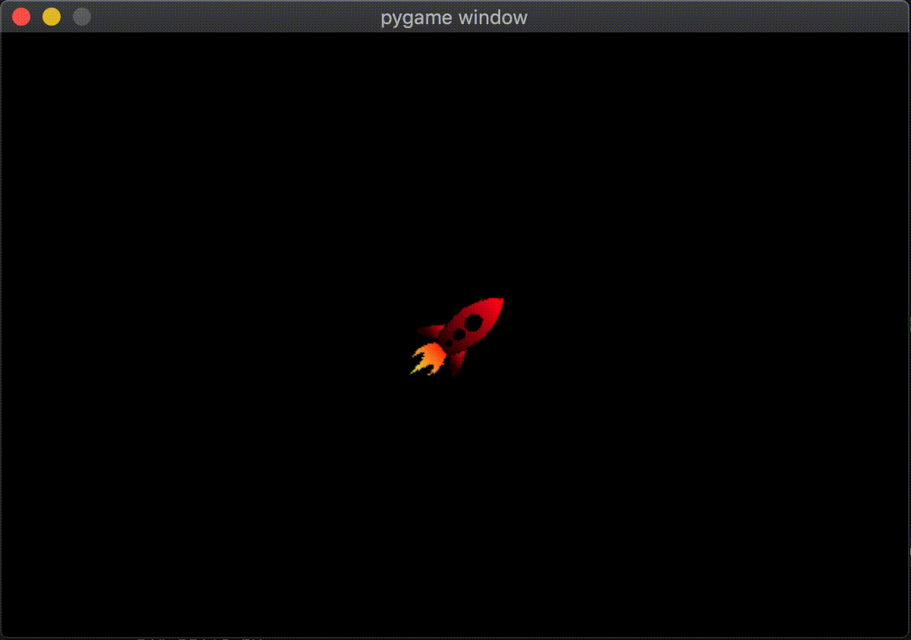
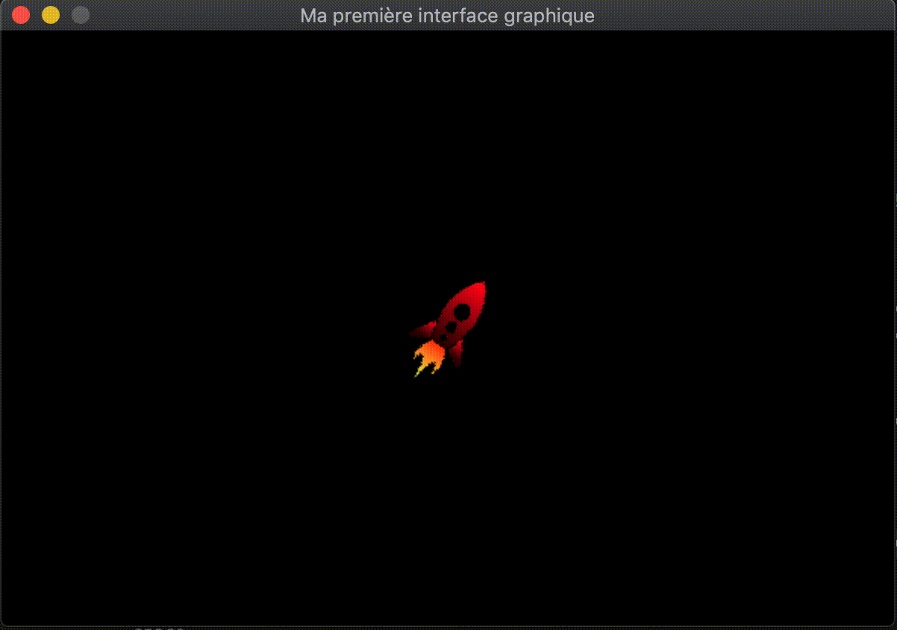

Gestion des balles - Programmation orientée objet
Création d'une balle
Notre premier objectif va être de permettre à notre utilisateur de tirer une balle en appuyant sur la touche espace.

Exercice 3
- 3.1. Dessiner une balle sur l'écran à l'aide de la fonction
pygame.draw.circle(). - 3.2. Modifier votre programme afin que la fusée tire une balle lorsque la touche espace est appuyée.
Création de plusieurs balles
Notre programme nous permet à présent de créer une balle. Comment transformer notre programme pour créer plusieurs balles ? Si nous souhaitions avoir au maximum deux balles sur l'écran à un instant précis, nous pourrions (bien que je ne le recommanderais pas) faire un copier-coller. Mais dans un jeu comme astéroides, il ne nous faudra pas deux balles mais une dizaine voire plusieurs dizaines. Faire autant de copier-coller est simplement inimaginable.
La solution ? Regrouper tout ce qui est propre à notre balle, et l'intégrer dans une seule entité qui nous permettra d'en faire autant de copies que nous souhaitons. On appelle cela un objet ou, en python, une classe.
Alors que vous n'avez probablement pas encore défini d'objet, vous les avez déjà utilisé de plusieurs fois. Par exemple les ndarray de numpy sont des objets. Que nous permettent-il de faire ? De définir une entité multipliable avec pour chaque instance créée ses variables ou attributs et ses méthodes. Chaque image a sa propre taille (shape) et on peut appeller plusieurs fonctions (comme apr exemple la fonction flip()) pour chacune.
Ecriture d'une première classe
Avant de créer une classe Balle, commençons par quelque chose de plus simple. Nous allons faire un nouveau programme pour tester les classes et les objets. Voici un programme qui permet de créer une classe eleve.
class eleve:
# constructeur
def __init__(self, nom, age):
# attibuts instances
self.nom = nom
self.age = age
# une méthode
def se_presenter(self):
print("Je m'appelle",self.nom, "et j'ai", self.age, "ans")
# création des instance
eleve1 = eleve("Nicolas",17)
eleve2 = eleve("Carlos",16)
# exécute une méthode des objets
eleve1.se_presenter()
eleve2.se_presenter()
Exercice 4
- 4.1. Exécuter le programme ci-dessus.
- 4.2. Modifier le pour ajouter un attribut
classequi permettra de savoir dans à quelle classe de son gymnase l'élève appartient. - 4.3. Modifier le programmme pour ajouter une méthode
ajouter_n_annees(n)qui ajoutenannées à l'élève.
Créer des balles grâce à un objet
Avec ces nouvelles connaissances acquises, vous avez maintenant tous les outils pour transformer votre programme astéroides afin que la fusée de l'utilisateur puisse tirer autant de balle qu'il le souhaite comme dans la vidéo ci-dessous.

Exercice 5
- 5.1. Créer une classe
Balleayant pour attribut une position dans l'espace et un orientation. - 5.2. Ajouter une méthode
draw(screen)qui permettra de dessiner la balle sur l'écran. - 5.3. Ajouter une méthode
update()qui permettra de faire avancer la balle en fonction de son orientation. Tester votre programme en créant une balle au début de votre programme. - 5.4. Modifier votre programme afin qu'à chaque fois que le joueur appuie sur la touche espace, une balle est tirée. Pour cela on créera une liste (d'abord vide) de toutes les balles du jeu.
- 5.5. Modifier votre programme afin de supprimer les balles qui sont sorties de l'écran.